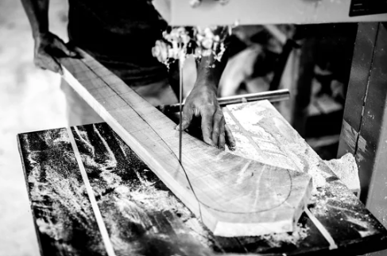

Hurling

History of the sport
Hurling is the fastest game on grass, the most skilful game in the world. Furthermore, it is also one of the oldest with its traditions set in the mists of ancient Irish history. The first written reference to hurling dates back to 1272 BC. It is a stick and ball game, played by teams of 15 on a rectangular grass pitch with H-shaped goals at each end. The stick that we use is called a ‘hurley’, or a camán in the Irish language, while the ball is called a sliotar. The primary objective is to score by driving the ball through the goals or putting the ball over the bar and thereby scoring a point. By putting the ball into the net, and scoring a goal, the team is awarded three points. The team with the highest score at the end of the match wins. It is over 3,000 years old, and is said to be the world’s fastest field game. It combining skills from lacrosse, field hockey, and baseball in a hard-hitting, highly paced game. The sliotar can travel up to 180 kilometres per hour over the course of a game! No protective padding is worn by players. A plastic protective helmet with a faceguard is mandatory for all age groups as of 2010. The game has been described as "a bastion of humility", with player names absent from jerseys and a player's number decided by his position on the field Players may be tackled but not struck by a one-handed slash of the stick; exceptions are two-handed jabs and strikes. Jersey-pulling, wrestling, pushing and tripping are all forbidden. Hurling (Irish: iománaíocht, iomáint) is an outdoor team game of ancient Gaelic Irish origin, played by men. One of Ireland's native Gaelic games, it shares a number of features with Gaelic football, such as the field and goals, the number of players and much terminology. The same game played by women is called camogie (camógaíocht), which shares a common Gaelic root. more....
How to play
A hurling pitch is similar in some respects to a rugby pitch but larger. The grass pitch is rectangular, stretching 130–145 metres (140–160 yards) long and 80–90 m (90–100 yd) wide. There are H-shaped goalposts at each end, formed by two posts, which are usually 6–7 metres (20–23 feet) high, set 6.5 m (21 ft) apart, and connected 2.5 m (8.2 ft) above the ground by a crossbar. A net extending behind the goal is attached to the crossbar and lower goal posts. The same pitch is used for Gaelic football; the GAA, which organises both sports, decided this to facilitate dual usage. Lines are marked at distances of 13 metres, 20 metres and 59 metres (41 metres for Gaelic football) from each end-line. Shorter pitches and smaller goals are used by youth teamsThe ball used in Gaelic Football is round, slightly smaller than a soccer ball. Teams consist of fifteen players: a goalkeeper, three full backs, three half backs, two midfielders, three half forwards and three full forwards (see diagram). The panel is made up of 24–30 players and five substitutions are allowed per game. An exception can now be made in the case of a blood substitute being necessary. Blood substitutes are a result of one player needing medical treatment for a laceration, usually stitches, and another coming on as a temporary replacement while the injured player is tended to. From 1 January 2010, the wearing of helmets with faceguards became compulsory for hurlers at all levels. This saw senior players follow the regulations already introduced in 2009 at minor and under 21 grades. The GAA hopes to significantly reduce the number of injuries by introducing the compulsory wearing of helmets with full faceguards, both in training and matches. Hurlers of all ages, including those at nursery clubs when holding a hurley in their hand, must wear a helmet and faceguard at all times. Match officials will be obliged to stop play if any player at any level appears on the field of play without the necessary standard of equipment.